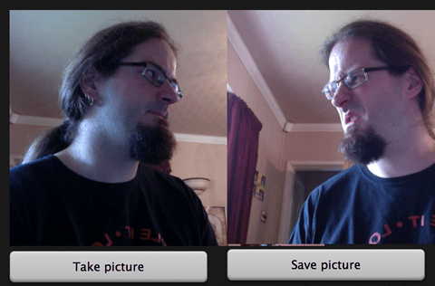
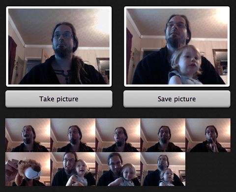
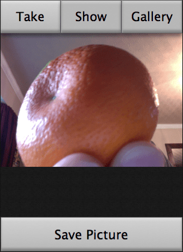
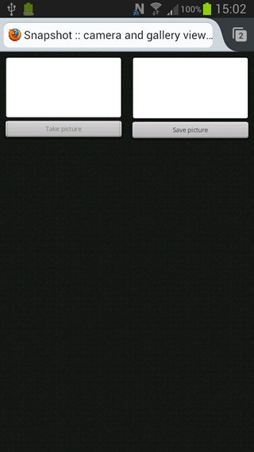

In this article we will discuss the main essential components of responsive design, with some links to further information where necessary.
For Web developers, it is now fairly common to be called upon to create a Web site or app that changes its user interface depending on the browser or device accessing the site to provide an optimized experience. One approach to this is to create different versions of your site/app for different platforms or browsers and serve them appropriately after detecting which browser or platform is looking at your site. But this is increasingly inefficient: browser sniffing is inherently error prone, and maintaining multiple copies of your code can turn out to be a nightmare.
It is usually much better to create a single version of your code which doesn't care about what browser or platform is accessing the site, but instead uses feature tests to find out what code features the browser supports or what the values of certain browser features are, and then adjusts the code appropriately. This tends to be termed responsive design or adaptive design, two related but different approaches. For a discussion on the differences between the two, read Responsive design versus adaptive design.
This is much more reliable, more maintainable, and more future proof. You don't get caught in the situation of having to bring out more new site versions as more new browsers and platforms come out, and adjust code as feature support in existing browsers changes.
There are disadvantages to this approach as well. If the content, layout, and functionality need to change greatly for different devices, it may not be such a good approach. Also, taking an existing site and adding responsiveness to it, to make it mobile/tablet friendly, can be a lot more effort than just creating a separate mobile site or app, especially if it is a sprawling enterprise site. Read more about responsive design advantages and disadvantages.
You can also read our discussion on the basics of responsive design, if you need some more background information and basics.
The best place to start is with fluid measurements for our application layout — essentially, this means using a combination of percentages and ems/rems to size your containers and text, not fixed widths such as pixels. This has a lot of advantages in that the layout will adapt to different viewport dimensions. Let's look at an example.
We've written a simple-but-fun prototype for an application called Snapshot, which takes a video stream from your webcam (using {{domxref("navigator.getUserMedia", "getUserMedia()")}}) then allows you to capture stills from that video stream (using HTML5 {{HTMLElement("canvas")}}), and save them to a gallery. You can then view previously-captured images and delete them. Other articles will discuss the functionality in more detail, but here we're interested in the layout.
Note: You can find the Snapshot app on Github; check out the code and help improve it. You can also see Snapshot running live. Note that getUserMedia() is an experimental technology, which currently only works in Google Chrome and Firefox desktop. More functionality and a clean up of the styling of Snapshot are planned for a future date.
Our desktop layout for Snapshot is three columns, containing the camera viewer, image capture view, and gallery, respectively.
The markup is very simple:
<x-deck selected-index="0">
<x-card>
…
</x-card>
<x-card>
…
</x-card>
<x-card>
…
</x-card>
</x-deck>
Note: These weird x- elements may be unfamiliar; they are part of Brick, Mozilla's UI element library for mobile web apps. We have used Brick to create the mobile layout for Snapshot, which you will read more about below.
To get these sitting side-by-side we have used the following rules:
x-card {
width: 100%;
}
x-card:nth-child(1), x-card:nth-child(2) {
width: 30%;
float: left;
padding: 2rem;
}
x-card:nth-child(3) {
width: 40%;
float: left;
height: 100%;
overflow: auto;
padding: 2rem;
}
So we're giving the first two columns a {{cssxref("width")}} of 30%, and the third a width of 40%, floating the columns all left. This way they end up side-by-side, and their proportions remain the same as the browser window size varies. This is just a simple grid example, but you can apply this principle to more complex grid layouts as required.
The padding does not affect the overall width and height of the containers because we have set the {{cssxref("box-sizing")}} of all elements to border-box:
*, *:before, *:after {
-webkit-box-sizing: border-box;
-moz-box-sizing: border-box;
box-sizing: border-box;
}
This basically means that {{cssxref("width")}} and {{cssxref("height")}} will now set the dimensions of an element all the way up to and including the border, not just the content. So if you set width: 40%, the box width will always be 40% of its parent, and any {{cssxref("padding")}} and {{cssxref("border")}} widths set on the box will be subtracted from the content width, not added to it. Very useful! Read more about this at * { Box-sizing: Border-box } FTW, by Paul Irish.
Things are working fairly well now, but there are still some issues just waiting to present themselves. For a start, let's have a look at what happens when we include the {{HTMLElement("video")}} and {{HTMLElement("img")}} elements inside our first two columns, naked and unstyled.

Because the size of replaced elements is dictated by the size of the media inserted into them, and the media is a fixed size, they explode out of their containing elements and make a mess of the layout. This is pretty horrible, but generally this kind of problem is easily fixed with some simple CSS:
img, video {
max-width: 100%;
}
This tells the replaced elements to remain constrained inside their container's widths, no matter what. However, if they aren't as wide as their containers, they will not stretch to fill them. In the snapshot example, we ended up with slightly different code:
x-card:nth-child(1) video, x-card:nth-child(2) img {
width: 100%;
…
}
This is because in our case, we do in fact want the video and image to stretch to always fill their containers no matter what — a subtle but important difference from {{cssxref("max-width")}} — and therefore always be the same size. The video always resizes dynamically, but the screen captures taken from it do not, so upon resizing the screen it was possible to end up with a messy layout with different sized elements when using max-width: 100%, such as:
Fluid grids are a great start, but you'll notice that at certain points (known as breakpoints) the layout starts to break down. At these points you'll want to change the layout to rectify the layout problem, and this can be done using media queries.
Note: Media queries are a CSS3 feature that allow you to selectively apply CSS depending on the results of media feature tests — for more on the basics, read Media queries.
In our example, we have a desktop layout, as we've already seen. This is created using the CSS rules included at the top of the stylesheet, before any media queries are encountered.
We also have a mid-width layout, which is aimed at working well on tablets and narrow laptop screens. This is created by all of the CSS inside the first media query:
@media all and (max-width: 1024px) {
x-card:nth-child(1), x-card:nth-child(2) {
width: 50%;
}
x-card:nth-child(3) {
width: 100%;
clear: left;
}
x-card:nth-child(3) img {
width: 20%;
}
}
So here we're altering the widths of the columns and removing the float of the third column (and adding clearing to guard against any float funny business). We've also altered the width of the images inside the third container (no longer a column — this is the gallery) so that now you get five per line (it was previously three per line).

We then have a narrow screen layout, designed to fit the bill for a mobile app/open Web app experience. This is created in multiple parts. First of all, as expected, there is a media query in our main CSS, which is quite weighty, so we'll go through it in parts:
@media all and (max-width: 480px) {
x-card:nth-child(1), x-card:nth-child(2), x-card:nth-child(3) {
width: 100%;
float: none;
padding: 0;
}
button {
margin-top: 0;
border-radius: 0;
}
x-card:nth-child(1) video, x-card:nth-child(2) img {
border-radius: 0px;
border: none;
padding: 0;
background-color: 0;
}
This first block resets a number of different things from the widescreen layouts that were't required for the mobile app.
x-card:nth-child(1) video, x-card:nth-child(2) img, x-card:nth-child(3) {
margin-top: 17.5vw;
}
x-card:nth-child(1) button, x-card:nth-child(2) button {
position: absolute;
bottom: 0;
}
x-card:nth-child(2) button:nth-of-type(2) {
bottom: 5.9rem;
}
x-card:nth-child(1) button {
font-size: 7vw;
}
x-card:nth-child(2) button {
font-size: 7vw;
}
The next rules do some sizing on the buttons inside the first two cards, and give all card contents a top margin so that their content won't be lost under the navigation buttons (see below). This was necessary because Mozilla Brick (also see below) forces its components to be 100% of the screen width and height. We have used vw (viewport width) units for these — 1vw is equivalent to 1% of the viewport width. This makes the dimensions scale up and down nicely along with the viewport width. Last for this section, we absolutely positioned all buttons at the bottom of the cards they are in, so the layout looks OK at different viewport size variations. We then add a rule that positions the second button in any card a button's width higher up the card. When you click on an image in the gallery it brings up options to delete or cancel deletion of the card, and you don't want two buttons on top of one another.
x-card:nth-child(3) img {
width: 50%;
}
This rule changes the width of the gallery images so now there are two per line.
nav {
width: 100%;
position: absolute;
z-index: 1000;
display: -webkit-flex;
display: -moz-flex;
display: -ms-flexbox;
display: flex;
}
nav button {
font-size: 6.8vw;
-webkit-flex: 1;
-moz-flex: 1;
-ms-flex: 1;
flex: 1;
border-left: 1px solid rgba(100,100,100,0.4);
}
nav button:first-child {
border-left: 0;
}
}
In this last set of rules, we change the display value of the {{HTMLElement("nav")}} to flex to make it show (it was set to none in the default CSS at the top of the stylesheet, as it wasn't needed for the other views.) We then use absolute positioning and {{cssxref("z-index")}} to make it take up no space in the document flow, and sit on top of the x-cards (this is why we gave the x-cards that top-margin earlier).
Next up, the font-size of the buttons is set to 6.8vw. Why? Because the top-margin of the x-cards was set to 17vw earlier on. All buttons in the app have been set to have a line-height of 2.5, in the default CSS at the top of the stylesheet (check if you don't believe me.) And 6.8 x 2.5 = 17.
Last, we have used flex: 1; to make the buttons always take up the same proportion of space on the line. Let's have a look at the mobile layout, in the below image.
But there are more tricks up our sleeves for this mobile app layout! As mentioned above, we used Mozilla Brick, a collection of ready-rolled mobile UI components, in the making of the mobile app layout. In particular, we used the deck component for the nice transition effect between cards when the buttons are pressed. For more on using Brick, read Mozilla Brick: ready made UI components.
What's more relevant to this article is that we didn't want the Brick CSS and JavaScript files being applied to the markup unless we were looking at the mobile app view. To achieve this, we applied the Brick CSS to the page using a separate {{HTMLElement("link")}} element with a media attribute:
<link href="dist/brick.css" type="text/css" rel="stylesheet" media="all and (max-width: 480px)">
This says that the whole stylesheet will not be linked to the HTML unless the viewport width is 480px or less. Moving on to the JavaScript, {{HTMLElement("script")}} elements don't accept media attributes, so I had to do this a different way. Fortunately there is a JavaScript construct called {{domxref("window.matchMedia()")}}, which can conditionally run JavaScript constructs depending on whether a media query returns true or not. We opened up the brick.js file and wrapped the whole lot in the following:
if (window.matchMedia("(max-width: 480px)").matches) {
// The whole of brick.js goes here!
}
This causes nothing inside the brick.js file to be run unless the viewport width is 480px or less. Problem solved.
One thing you might notice is that when the viewport gets very wide (such as on a cinema display), the layout stops getting wider, and just centers in the space available. This is pretty simple to achieve. You could use a min-width media query to fix the {{HTMLElement("body")}} width at a certain point:
@media all and (min-width: 1400px) {
body {
width: 1400px;
margin: 0 auto;
}
}
But it's actually easier to just set the following rule instead, and get rid of the media query altogether:
body {
max-width: 1400px;
margin: 0 auto;
}
We also came across some problems with orientation: the mobile-app layout of our example app is designed for portrait orientation, and looks terrible when viewed on a device in landscape orientation. To fix this, we added in a media query that only applies its contents to the markup when device is viewed in landscape orientation:
@media all and (max-width: 480px) and (orientation: landscape) {
nav {
width: auto;
-webkit-flex-direction: column;
-moz-flex-direction: column;
-ms-flex-direction: column;
flex-direction: column;
}
nav button {
font-size: 6.8vh;
}
nav button {
border-left: 0;
}
x-card:nth-child(1) video, x-card:nth-child(2) img, x-card:nth-child(3) {
margin-top: 0;
}
x-card:nth-child(1) button, x-card:nth-child(2) button {
font-size: 2rem;
}
}
This does the following:
This results in the following layout:
Note: Another solution with respect to orientation might be to just lock the orientation of your app, to portrait or landscape. If you are working on an installed app, you can easily do this with the orientation manifest field. If you want a solution that works across general web apps, you could use the Screen orientation API, and/or provide a message asking the user to rotate their screen if they are using the wrong orientation (for example, if window.innerWidth is larger than window.innerHeight, assume the
game is landscape mode and show a "please rotate" message.)
One last problem to mention for our example app is concerned with mobile browsers and media queries. If we viewed my example in a mobile browser in its current state, we wouldn't see our nice mobile layout. Instead, we'd see the below image.
I'm sure you'll agree that this really isn't what we wanted — why is this happening? In short, mobile browsers lie. They don't render web pages at their true viewport width. Instead, they render pages at a higher assumed viewport width (something approaching a laptop screen), and then shrink the result down to fit inside the mobile screen. This is a sensible defensive mechanism — most old school sites that don't have media queries would look terrible when rendered at say, 320px or 480px wide. But this doesn't help us responsible web developers, who have written small screen layouts into our CSS using media queries and want mobile devices to display those!
There is a way to override this mobile rendering behavior — viewport, which is inserted into our HTML pages in the form of a {{HTMLElement("meta")}} tag. In my example, let's add the following into our HTML {{HTMLElement("head")}}:
<meta name="viewport" content="width=480">
This causes our browser to render our mobile app layout properly — width=480 tells the browser "render this markup at 480 pixels wide", hence the media queries kick in appropriately. There are many more options available in the viewport meta tag, which you can read about in Using the viewport meta tag to control layout on mobile browsers.
Note: There is a spec called device adaptation, which defines the same functionality but in CSS, using a @viewport at-rule. This is probably a more logical place to put such information, but the spec is not as well supported as the viewport meta tag, therefore you should stick with that for now.
Another problem that comes up more and more these days is making image/video weight (size in KB) responsive as well as the dimensions of the image on screen. Yes, you want the images to be contained inside the app UI whether you are using it on desktop or mobile, but you should also consider that mobile apps have much smaller viewport dimensions available than desktop apps, so you should try to give mobile devices a smaller image to download. Mobiles in general (more commonly in some parts of the world than others) are on lower bandwidth connections and have less memory available than desktop devices, so yes, those extra kilobytes really do count.
Another challenge is dealing with high resolution screens — raster graphics designed for low resolutions are in danger of appearing tiny when displayed on a high resolution screen, so devices often apply a default zoom factor to rendered pages to avoid this. The trouble with this, then, is that raster images are zoomed in and as a result can start to look pixelated.
For CSS background images this is a fairly easy problem to solve. If you use the mobile first methodology, you will be creating your mobile layout inside your default CSS, before any media queries have been applied. The media queries then supply CSS that is only applied to the markup when the viewport is above a certain width. Let's look at a quick example:
header {
height: 300px;
width: 100%;
background: url(images/small-header.jpg) center;
}
@media all and (min-width: 480px) {
header {
background: url(images/large-header.jpg) center;
}
}
This means that mobile browsers only download the mobile background image asset — not the desktop mobile assets — because they fail the media query tests and therefore ignore the media queries. You can also serve a larger graphic to a higher resolution device using a resolution media query, like so:
button {
background: url(images/low-res-header.jpg) 1rem center ;
}
@media only screen and (-webkit-min-device-pixel-ratio: 2),
only screen and ( min-resolution: 192dpi),
only screen and ( min-resolution: 2dppx) {
button {
background: url(images/high-res-header.jpg) 1rem center ;
}
}
This looks rather complicated, but really it's not — we are providing a number of media query options, as at this time different browsers support different resolution media query types and even units. Brett Jankord has a good explanation at Cross Browser Retina/High Resolution Media Queries.
HTML5 video is fairly well catered for in terms of responsive capabilities. If you wish, you can point to multiple video files via {{HTMLElement("source")}} attributes, each with their own source and MIME type:
<video controls> <source src="videos/720/crystal720.mp4" type="video/mp4"> <source src="videos/720/crystal720.webm" type="video/webm"> </video>
But you can go one step further. You can include media attributes on the <source> element containing media queries — the video loaded in the browser will depend on both the format the browser supports, and the results of the media tests. So for example:
<video controls> <source src="videos/320/crystal320.mp4" type="video/mp4" media="all and (max-width: 480px)"> <source src="videos/320/crystal320.webm" type="video/webm" media="all and (max-width: 480px)"> <source src="videos/720/crystal720.mp4" type="video/mp4" media="all and (min-width: 481px)"> <source src="videos/720/crystal720.webm" type="video/webm" media="all and (min-width: 481px)"> </video>
This allows your site to serve different video files based on the available space, in order to optimize the user's experience.
HTML images are a more difficult proposition. There is no mechanism inherent in HTML images for serving different image files dependent on viewport size, and, due to a number of irksome browser behavior realities, solutions are more difficult to hack together than you would imagine. There are currently some standards proposals in the works that would provide this — the W3C responsive images community group discussed this problem for ages and arrived at the <picture> element, which provides a similar markup structure to {{HTMLElement("video")}}, with {{HTMLElement("source")}} alternatives selectable via media query results. Another proposal, srcset, was put forward by Apple and takes a slightly different approach, instead providing a new srcset attribute for {{HTMLElement("img")}} inside which image references are placed along with "hints" that the browser can use to work out which image is most suitable to display given its viewport size, resolution, etc. These are not intended to be mutually exclusive.
This all sounds good. But those solutions are definitely not ready for production yet — both are in a very early stage of standardization, and have no support across browsers. Currently we have to rely on various polyfills and other solutions, none of which are perfect for all situations, so you need to decide which one is right for your particular situation. Some available solutions are as follows:
src values with JavaScript depending on browser features, circumventing browser preloading issues. This is promising, but doesn't work very well across older browsers.<picture>, which works nicely, but it does require a lot of custom markup..htaccess to a more appropriate size, if appropriate. This doesn't require markup or scripting, but has a number of limitations.For some image requirements (not photographs, but icons and user interface elements are a good fit), a good solution is to use vector graphics. Because vector images are calculated based on mathematical algorithms rather than containing separate data on every pixel in the image, they tend to be smaller in file size, and are infinitely scalable when zoomed or viewed on high resolution devices (at least, in theory). Some ideas follow, which also help to keep the number of HTTP requests down — another key factor in mobile app performance: